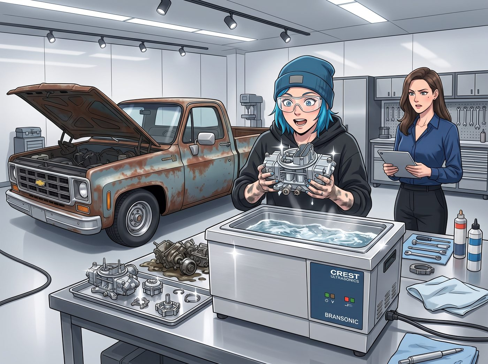

借鈔能力改裝記

一、鈔能力爆改
拿到那台超聲波清洗機一週使用權後,Chloe 毫不客氣地把她那輛一九七七年產、鏽蝕斑斑的雪佛蘭老皮卡,直接開進了 Chase 莊園那座無塵地下車庫,開啟了一場「頂級工業設備與野路子汽修」的暴力融合。
她把積了三十年油垢的雙腔化油器拆成零件,一股腦扔進那台價值數萬美元的工業超聲波清洗槽。兩分鐘後撈出來,零件光亮得像剛出廠的航太級鋁合金,連她自己都被這個效果驚到愣了兩秒。
「早知道有這玩意兒,」她喃喃自語,「老娘這幾年是白費了多少功夫用鋼絲刷手搓。」
緊接著,她又借用那台光纖雷射焊機,把車底盤幾處快要鏽穿的鋼樑,重新打磨補平,焊縫平整得挑不出半點毛病。
二、名貴零件的奢華移植
靠著 Victoria 默許的「垃圾堆翻找權」,Chloe 從保時捷備件箱裡順走了一組競技級高壓點火線圈、一組四活塞 Brembo 拆車卡鉗,還有一根原本用在卡丁車上的碳纖維進氣喉管。
經過整整兩天的敲敲打打,這輛外表依舊掉漆、佈滿刮痕的破皮卡,內在已經被徹底改裝成一台點火響應極快、怠速聲浪低沉如野獸低吼的硬核公路怪獸。
三、車頂雙傑作的暴擊
改裝完成當天,Victoria 穿著剪裁俐落的米白色羊絨大衣,端著一杯濃縮咖啡,踩著高跟鞋走下地庫視察「領地」,視線隨即定格在皮卡車內敞開的車頂棚上。
車門大開著,車頂正中央,依然釘著那兩張經典拍立得——左邊是 Chloe 穿著鵝黃碎花裙、手握油槍、眼神兇狠的「加油站戰神照」;右邊是 Max 被閃光燈晃瞎、吐著舌頭、五官扭曲成一團的「呆滯黑歷史」。
Victoria 剛喝進去的一小口濃縮咖啡,瞬間差點嗆進氣管。她優雅地用紙巾按住嘴角,眼神在照片和滿身油污的 Chloe 臉上來回切換了三次。
「天哪,Price,」她終於找回聲音,語氣裡帶著毫不留情的刻薄,「我以為妳的品味底線,已經停留在爛大街的骷髏頭背心了,沒想到妳居然能把九十年代田園碎花裙,穿出一種在索馬利亞打劫油罐車的氣質。」
Chloe 挑眉,絲毫不覺得被冒犯:「多謝誇獎。」
Victoria 的視線接著移向 Max 那張照片,發出一聲極其刻薄、卻忍不住帶著笑意的輕嗤。
「至於考菲爾德,」她說,「這張完全可以投稿給《國家地理》,當作『受驚野生囓齒動物』的專題封面。」她搖搖頭,語氣裡帶著一絲真心的困惑,「你們兩個,到底是怎麼在西雅圖活著回來的?」
蹲在車尾整理工具箱的 Max,聽到這句話,整個人瞬間僵住,手裡的扳手「哐噹」一聲掉在地上。她猛地抬頭,臉頰以肉眼可見的速度漲紅,想開口反駁,卻一時語塞,只能結結巴巴地擠出幾個字。
「那、那張照片,」她聲音發緊,「是、是在毫無防備的情況下被閃光燈突襲的,不能代表我平常的樣子……」
「是嗎?」Victoria 挑眉,饒有興致地又湊近細看了一眼那張照片,「可我覺得,這個表情意外地生動,很有紀實攝影的張力。」
「這不是紀實攝影,」Max 幾乎要哀嚎出聲,雙手捂住臉,整個人蹲回車尾的陰影裡,試圖讓自己徹底消失,「這是黑歷史……」
Chloe 在一旁看著這幕,笑得肩膀直抖,絲毫沒有替她解圍的意思。
「這是個好問題,」Chloe 咧嘴一笑,擦了擦手上的油污,「不過妳既然這麼好奇,要不要親自體驗一下?」
Victoria 皺眉,語氣裡帶著警惕:「體驗什麼?」
「我這輛車,」Chloe 拍了拍車身,得意地晃了晃剛拆下來的舊化油器,「剛改裝完,正好需要試車。」
Victoria 的目光在那輛外表依舊破舊不堪的皮卡上停留了幾秒,眼底閃過一絲猶豫,卻還是硬著頭皮,擺出一副不情不願的高傲姿態。
「……勉強奉陪。」